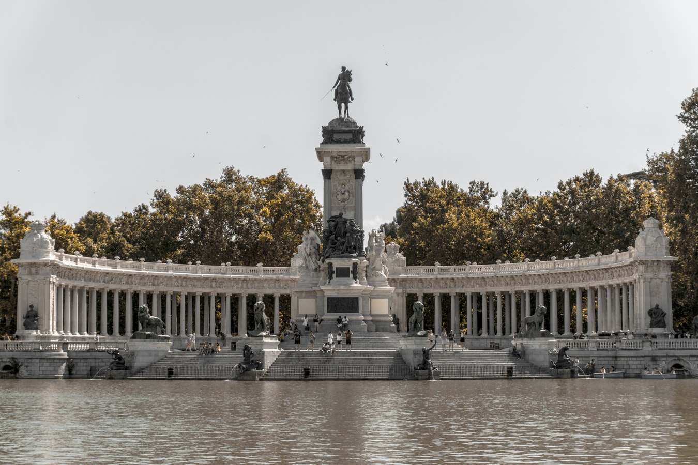
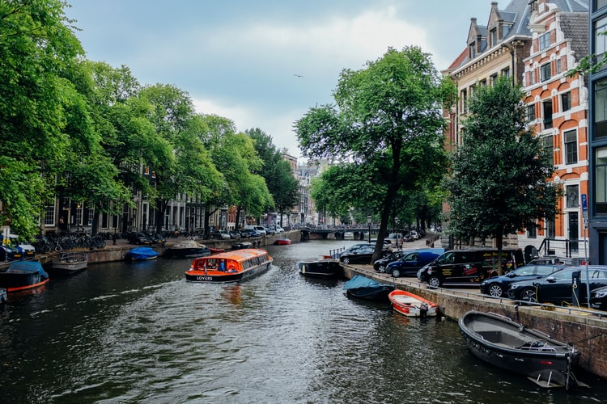

L'Espagne est un pays européen situé sur la péninsule ibérique et comprenant 17 régions autonomes à la géographie et aux cultures diverses. Madrid, la capitale, abrite le palais royal et le musée du Prado, où sont exposées les œuvres d'artistes européens. On peut admirer à Ségovie un château médiéval (l'Alcazar) et un aqueduc romain intact. La capitale de la Catalogne, Barcelone, se caractérise par les monuments modernistes d'Antoni Gaudí, notamment la Sagrada Família. Du fait de son emplacement, le territoire espagnol a été l'objet de nombreuses influences externes, souvent simultanément, depuis les temps préhistoriques jusqu'à la naissance de l'Espagne en tant que pays. Inversement, le pays lui-même a été une importante source d'inspiration pour d'autres régions, principalement durant l'ère moderne, lorsqu'il est devenu un empire colonial qui a laissé un héritage de plus de 400 millions d'hispanophones à ce jour. L'Espagne en tant que pays est née de l'union dynastique au xve siècle de deux États souverains, les Couronnes de Castille et d'Aragon — elles-mêmes construites tout au long du Moyen Âge par l'union ou la conquête d'entités politiques, culturelles et linguistiques initialement distinctes, qui se retrouvent dans les multiples nationalités historiques reconnues par la Constitution actuelle de l'État espagnol — et de l'absorption en 1492 du royaume de Grenade et en 1512 de la partie ibérique du royaume de Navarre. Cet ensemble devient un État unitaire en 1715-1716 par la dissolution des deux Couronnes en application des décrets de Nueva Planta. La monarchie catholique espagnole, qui possède alors un immense empire colonial, est, du xve siècle au début du xviie siècle, une grande puissance politique et économique. Elle connaît notamment un important rayonnement culturel dans toute l'Europe durant le Siècle d'or espagnol (xvie siècle-xviie siècle). L'influence espagnole décline par la suite, particulièrement tout au long du xixe siècle et au début du xxe siècle avec la perte de ses colonies, la montée des nationalismes et la multiplication des crises politiques, économiques et sociales qui culminent avec la Guerre civile de 1936 à 1939 suivie d'une longue période de dictature franquiste, conservatrice, militariste et nationale catholique de 1939 à 1975.

Les Pays-Bas sont un pays situé au nord-ouest de l'Europe et réputé pour son paysage plat composé de canaux, de champs de tulipes, de moulins à vent et de pistes cyclables. Amsterdam, la capitale, accueille le Rijksmuseum, le musée Van Gogh et la maison dans laquelle Anne Frank a vécu clandestinement et a rédigé son journal intime pendant la Seconde Guerre mondiale. Les demeures le long des canaux et les nombreuses œuvres d'artistes tels que Rembrandt et Vermeer sont les vestiges du "siècle d'or" de la ville dans les années 1600. Les territoires aujourd'hui rassemblés en tant que Pays-Bas sont dans leur histoire relativement indépendants de tout pouvoir royal centralisé avant le xvie siècle bien que temporairement inclus dans les empires romain et germanique. Alors que Charles Quint affirme une unité nationale en 1549, son fils Philippe II voit la révolte des habitants des Pays-Bas contre son autorité lors de la guerre de Quatre-Vingts Ans12,13. La République est alors fondée sur sa défaite14. Le nouvel État connaît un siècle d'or15, lorsqu'il constitue un Empire colonial (dont les vestiges sont les territoires caribéens conservés aujourd'hui) et porte son rayonnement culturel et artistique à un niveau mondial16. Affaibli par les guerres napoléoniennes et la capture de sa flotte navale, le pays devient le royaume de Hollande en 1806 et ne revient pas à un régime républicain lors du départ des Français, en 1815. Il est l'un des premiers États au monde à se doter d'un Parlement élu qui n'est pas renversé ; à partir de 1848, les Pays-Bas sont gouvernés comme une démocratie parlementaire sous l'influence de Johan Thorbecke, durant le règne de Guillaume II. Les Pays-Bas ont une longue tradition de tolérance sociale et sont généralement vus comme un pays progressiste et novateur, en abolissant la peine de mort en 1870, en autorisant le droit de vote des femmes en 1917 et en décriminalisant relativement tôt l'avortement, la prostitution, l'euthanasie, et certaines drogues.
Le Canada est un pays nord-américain situé entre les États-Unis au sud et le cercle polaire au nord. Les principales villes sont Toronto, Vancouver, centre du cinéma de la côte ouest, Montréal et Québec, toutes deux francophones, et Ottawa, la capitale. Le Canada compte, parmi ses vastes étendues sauvages, le parc national de Banff avec ses nombreux lacs situé dans les montagnes Rocheuses. Il abrite également les célèbres et majestueuses chutes du Niagara. Les premiers occupants du territoire canadien ont été les Amérindiens, dont les migrations remontent à environ 15 000 ans12 lors de la dernière glaciation qui a abaissé le niveau des océans et créé un pont terrestre reliant l'Eurasie à l'Amérique, permettant à ceux-ci de s'installer13. Si des Vikings s'installent dès le xie jusqu'au xive siècle, les premières explorations des Européens débutent à la fin du xve siècle, culminant avec les expéditions du Français Jacques Cartier dans le golfe du Saint-Laurent. Après quelques expériences infructueuses dans la première moitié du xvie siècle, le 5 août 1583, la colonie anglaise de Terre-Neuve est fondée, suivie des premiers comptoirs pérennes français sur le continent entre 1600 et 1608, amorçant le processus de la colonisation européenne. Par la suite, d'autres colonies britanniques et françaises sont établies, notamment dans la région de la côte Atlantique (Nouvelle-Écosse, Acadie), dans la vallée du fleuve Saint-Laurent et la péninsule du Labrador (Nouvelle-France) ainsi que dans la zone arctique, tandis que d'autres puissances européennes telles l'Espagne et la Russie explorent le reste du territoire canadien. À la suite de divers conflits dont surtout la guerre de Succession d'Espagne (1701-1714), la guerre de la Conquête (1754-1760) et la guerre d'indépendance des États-Unis (1775-1783), la Grande-Bretagne gagne et perd des territoires au xviiie siècle, aboutissant à ce qui correspond au territoire canadien d'aujourd'hui. Trois de ces colonies se fédèrent le 1er juillet 1867 et forment le dominion du Canada, nation indépendante sous domination partielle de la Couronne britannique. Sa souveraineté totale est ensuite garantie par la déclaration Balfour de 1926, le Statut de Westminster de 1931 et le rapatriement de sa Constitution en 1982.